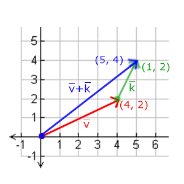
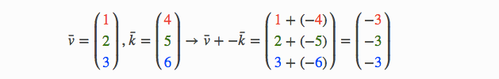
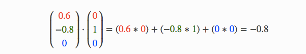
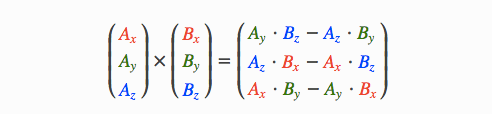

向量 Vector¶
向量最基本的定义就是一个方向。或者更正式的说，向量有一个方向（Direction）和大小（Magnitude，也称之为长度）。可以把向量想像成一个藏宝图上的指示：“向左走十步，向北走三步，然后向右走五步”；“左”就是方向，“十步”就是向量的长度。那么这个藏宝图的指示一共有三个向量。向量可以在任意维度（Dimension）上，但是我们通常只使用2~4维。如果一个向量有两个维度，它表示一个平面的方向（想像一下2D的图像），当它有三个维度的时候，它可以表达一个3D世界的方向。
下图展示了三个向量，每个向量在2D图像中都用一个箭头(x,y)表示。我们在2D图片中展示这些向量，因为这样子会更直观一点。由于向量表示的是方向，起始于何处并不会改变它的值。

数学家喜欢在字母上面加一横表示向量，比如说在v的上面加→。当用在公式中时它们通常是这样的：
注：把2D向量当做z坐标轴为0的3D向量。
由于向量是一个方向，所以有些时候会很难形象地将它们用位置表示出来。为了让其更为直观，通常设定这个方向的原点为(0,0,0)（在2D世界中，这个原点就是(0,0)），然后指向一个方向，对应一个点，使其变为位置向量（Position Vector）。比如上图中位置向量(3,2)在图像中的起点会是(0,0)，并会指向(3,2)。
向量与标量运算¶
标量(Scalar)只是一个数字（或者说是仅有一个分量的向量）。当把一个向量加、减、乘或除一个标量，我们可以简单的把向量的每个分量分别进行该运算。对于加法来说会像这样：
其中的+可以是+，-，·或÷，其中·是乘号。注意，-和÷运算时不能颠倒（标量 -/÷向量），它为颠倒的运算是没有定义的。
向量取反¶
对一个向量取反（Negate）会将其方向逆转。一个向东北的向量取反后就指向西南方向了。我们在一个向量的每个分量前加负号就可以实现取反了（或者说用-1数乘该向量）：
向量加减¶
向量的加法可以被定义为是分量的(Component-wise)相加，即将一个向量中的每一个分量加上另一个向量的对应分量：

向量v = (4, 2)和k = (1, 2)可以直观地表示为：

就像普通数字的加减一样，向量的减法等于加上第二个向量的相反向量：

两个向量的相减会得到这两个向量指向位置的差。这在我们想要获取两点的差会非常有用。

长度（向量的模）¶
我们使用勾股定理(Pythagoras Theorem)来获取向量的长度(Length)/大小(Magnitude)。如果你把向量的x与y分量画出来，该向量会和x与y分量为边形成一个三角形:

因为两条边（x和y）是已知的，如果希望知道斜边v¯的长度，我们可以直接通过勾股定理来计算：
向量相乘¶
两个向量相乘是一种很奇怪的情况。普通的乘法在向量上是没有定义的，因为它在视觉上是没有意义的。但是在相乘的时候我们有两种特定情况可以选择：一个是点乘(Dot Product)，记作v¯⋅k¯，另一个是叉乘(Cross Product)，记作v¯×k¯。
点乘¶
两个向量的点乘等于它们的数乘结果乘以两个向量之间夹角的余弦值。可能听起来有点费解，我们来看一下公式：
它们之间的夹角记作θ。为什么这很有用？想象如果v¯和k¯都是单位向量，它们的长度会等于1。这样公式会有效简化成：
现在点积只定义了两个向量的夹角。你也许记得90度的余弦值是0，0度的余弦值是1。使用点乘可以很容易测试两个向量是否正交(Orthogonal)或平行（正交意味着两个向量互为直角）。如果你想要了解更多关于正弦或余弦函数的知识，我推荐你看可汗学院的基础三角学视频。
所以，我们该如何计算点乘呢？点乘是通过将对应分量逐个相乘，然后再把所得积相加来计算的。两个单位向量的（你可以验证它们的长度都为1）点乘会像是这样：

要计算两个单位向量间的夹角，我们可以使用反余弦函数cos−1 ，可得结果是143.1度。现在我们很快就计算出了这两个向量的夹角。点乘会在计算光照的时候非常有用。
叉乘¶
叉乘只在3D空间中有定义，它需要两个不平行向量作为输入，生成一个正交于两个输入向量的第三个向量。如果输入的两个向量也是正交的，那么叉乘之后将会产生3个互相正交的向量。接下来的教程中这会非常有用。下面的图片展示了3D空间中叉乘的样子：

不同于其他运算，如果你没有钻研过线性代数，可能会觉得叉乘很反直觉，所以只记住公式就没问题啦（记不住也没问题）。下面你会看到两个正交向量A和B叉积：

是不是看起来毫无头绪？不过只要你按照步骤来了，你就能得到一个正交于两个输入向量的第三个向量。